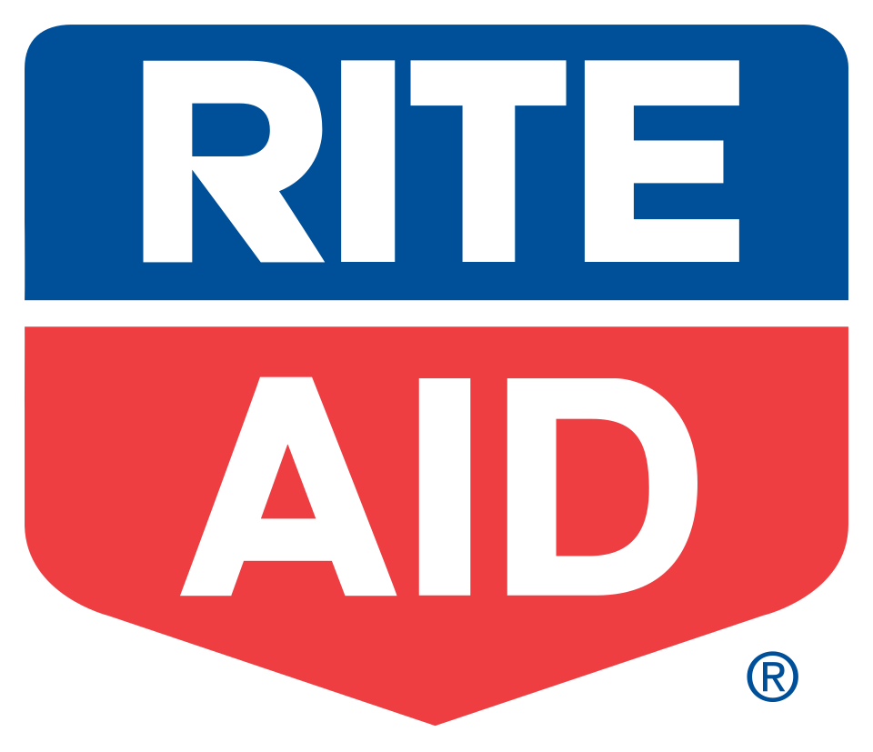

홈 > 브랜드 매거진 > Pick Pay
Pick Pay
픽 페이(Pick Pay)는 스위스에서 운영되다 2005년 사라진 할인 슈퍼마켓 체인이다.
산업 분야 리테일·커머스 · 공개 등급 자료 기반 · 브랜드 평가 4.1 ★

한눈에 보는 브랜드
픽엔페이(Pick n Pay)는 남아프리카공화국 케이프타운에 본사를 둔 대형 식료품 슈퍼마켓 체인이다. 1967년 레이먼드 애커먼과 부인 웬디가 케이프타운의 작은 점포 네 곳을 인수하며 출발했고, 이듬해 요하네스버그 증권거래소(JSE)에 상장했다.
1975년 보크스버그에 남아공 최초의 하이퍼마켓을 열어 원스톱 쇼핑을 도입한 것과, 2024년 창업주 가문이 지배 의결권을 내려놓고 자회사 박서(Boxer)를 별도 상장하며 대규모 자본 재편에 들어간 것이 두 전환점이다. 현재 아프리카 일곱 개 나라에서 약 2,300개 매장과 9만 명가량 임직원 규모로 운영된다.
브랜드 관점
픽엔페이의 핵심 차별점은 창업 초기부터 견지한 소비자 주권 철학과 가맹·직영 혼합 모델이다. 창업주 애커먼은 행정·상품·사람·사회적 책임을 네 다리로, 그 위에 고객을 올린 '테이블의 네 다리' 경영 원칙을 세워 가격 담합에 맞서고 저가 공급과 사회 공헌을 동시에 추구했다.
다만 2020년대 들어 경쟁사 쇼프라이트의 체커스, 울워스 푸드에 점유율을 내주며 적자에 빠졌고, 저가 시장은 자회사 박서로, 핵심 슈퍼마켓은 신선식품과 디지털로 재정비하는 이원 전략으로 회생을 도모하고 있다. 한국 독자에게는 가문 경영 기업이 외부 자본과 전문 경영을 받아들이며 구조를 바꾸는 사례로, 또 신흥시장에서 저가와 프리미엄으로 갈라지는 식품 유통 경쟁 구도의 표본으로 읽힌다.
시작과 성장
픽엔페이가 태어난 1960년대 남아공 유통업은 체커스와 OK바자스가 1950년대 초 도입한 셀프서비스 슈퍼마켓이 막 확산하던 시기였다. 의류 체인 애커먼스 창업자의 아들이자 체커스에서 점포를 4개에서 85개로 늘린 경험을 쌓은 레이먼드 애커먼은 1966년 케이프타운의 픽엔페이 점포 네 곳을 잭 골딘에게서 사들였고, 1967년 정식 출범했다.
첫해 매출이 이미 500만 랜드를 넘고 30만 랜드 넘는 이익을 내자 경쟁사들이 가격 전쟁으로 견제에 나섰다. 1968년 JSE 상장, 1975년 보크스버그 첫 하이퍼마켓 개장이라는 두 전환점을 거쳐 규모를 키웠고, 1993년 콰줄루나탈 웨스트빌에 첫 가맹점을 열며 가맹 모델을 본격화했다.
2002년에는 농촌·저소득 시장을 겨냥한 저마진 체인 박서를 인수해 사업 영역을 확장했으며, 이후 레소토·에스와티니·나이지리아·보츠와나·잠비아·짐바브웨 등 아프리카 대륙으로 점포망을 넓혔다.
브랜드 아이덴티티
픽엔페이의 정체성은 '소비자를 여왕처럼 대하면 그 여왕이 당신을 왕으로 만든다'는 창업 신념에서 출발한다. 적정 가격의 올바른 상품과 사회적 책임을 함께 강조하는 가치 지향이 브랜드의 뿌리다.
2007년 40주년에 맞춰 단행한 리브랜딩에서는 검정을 걷어내고 'Pick'에는 짙은 파랑, 'Pay'에는 따뜻한 체리 레드를 입혀 P 글자를 색 블록 틀로 감쌌고, '당신에게 영감을 받아(Inspired by you)'라는 브랜드 라인을 내세웠다. 타깃은 중산층 도시 가구를 중심으로 하되 박서를 통해 저소득층까지 포괄하며, 2011년 도입한 스마트쇼퍼 적립 제도로 충성 고객층을 관리한다.
브랜드 보이스는 친근함과 가치를 중시하는 생활 밀착형 어조를 띤다.
제품과 서비스
픽엔페이는 신선식품·가공식품·생활용품을 아우르는 종합 슈퍼마켓으로, 직영 슈퍼마켓과 가맹점, 하이퍼마켓, 편의형 익스프레스, 저가 체인 박서, 그리고 의류 라인 픽엔페이 클로딩까지 다양한 형태를 운영한다. 채널은 오프라인 매장과 온라인 쇼핑을 결합하며, asap!
슈퍼 앱으로 60분 즉시 식료품 배송과 전국 단위 의류 주문을 함께 제공한다.
현재 상태
본사는 남아프리카공화국 케이프타운에 있으며, JSE에 상장(종목 PIK)된 픽엔페이 스토어스 유한회사가 그룹을 이끈다. 2024년 창업주 애커먼 가문은 의결권을 과반 아래로 낮추고 의장·CEO·CFO 지명권을 내려놓아 외부 투자자 신뢰 회복을 꾀했고, 같은 시기 박서를 별도 상장하고 신주 발행으로 자본을 확충했다.
션 서머스가 CEO를 맡아 핵심 슈퍼마켓 흑자 전환을 목표로 회생 계획을 추진 중이다. 구체적 지분율 등 세부 지배구조 수치는 시점별로 변동하므로 일부는 미공개로 둔다.
타임라인
정리된 연도형 이벤트가 없습니다.
BI/CI 변천사
함께 읽을 브랜드
 리테일·커머스 · 자료 기반CAP
리테일·커머스 · 자료 기반CAP카프마르크트(CAP, CAP-Markt)는 1999년 독일에서 시작한 사회적 슈퍼마켓 체인이다. 장애인 고용을 핵심으로 하는 동네형 슈퍼마켓으로, 명칭은 'handi...
 리테일·커머스 · 자료 기반Simply Market
리테일·커머스 · 자료 기반Simply Market심플리 마켓(Simply Market)은 2005년 프랑스 오샹(Auchan)이 도입한 슈퍼마켓 브랜드였다. 기존 아탁(Atac) 매장을 대체하는 콘셉트였으나 201...
 리테일·커머스 · 자료 기반까르푸
리테일·커머스 · 자료 기반까르푸까르푸(Carrefour)는 유럽 최초로 하이퍼마켓 형태를 도입한 프랑스의 다국적 대형 유통업체이다.
 리테일·커머스 · 자료 기반Globus
리테일·커머스 · 자료 기반Globus글로부스(Globus)는 1828년 독일에서 시작한 하이퍼마켓(대형마트) 체인이다. 자를란트에 본사를 둔 브루흐 가문의 가족기업으로 식품·DIY·전자제품을 아우른다.

리테일·커머스 · 자료 기반Rite Aid라이트 에이드(Rite Aid)는 1962년 알렉스 그래스가 미국 펜실베이니아에서 창업한 드러그스토어 체인이다. 한때 미국 3대 약국 체인이었으나 2020년대 들어...
 리테일·커머스 · 자료 기반롯데백화점
리테일·커머스 · 자료 기반롯데백화점롯데백화점은 롯데쇼핑이 운영하는 대한민국의 대표 백화점 브랜드다. 1979년 서울 소공동 본점을 열었으며 국내 백화점 업계 1위로 최다 점포망을 갖췄다.
 리테일·커머스 · 자료 기반달러 제너럴
리테일·커머스 · 자료 기반달러 제너럴달러제너럴(Dollar General)은 생활필수품과 잡화를 초저가에 판매하는 미국의 달러 스토어 체인이다.
 리테일·커머스 · 자료 기반마이크로소프트 스토어
리테일·커머스 · 자료 기반마이크로소프트 스토어마이크로소프트 스토어(Microsoft Store)는 마이크로소프트가 운영한 리테일 매장 체인이다.